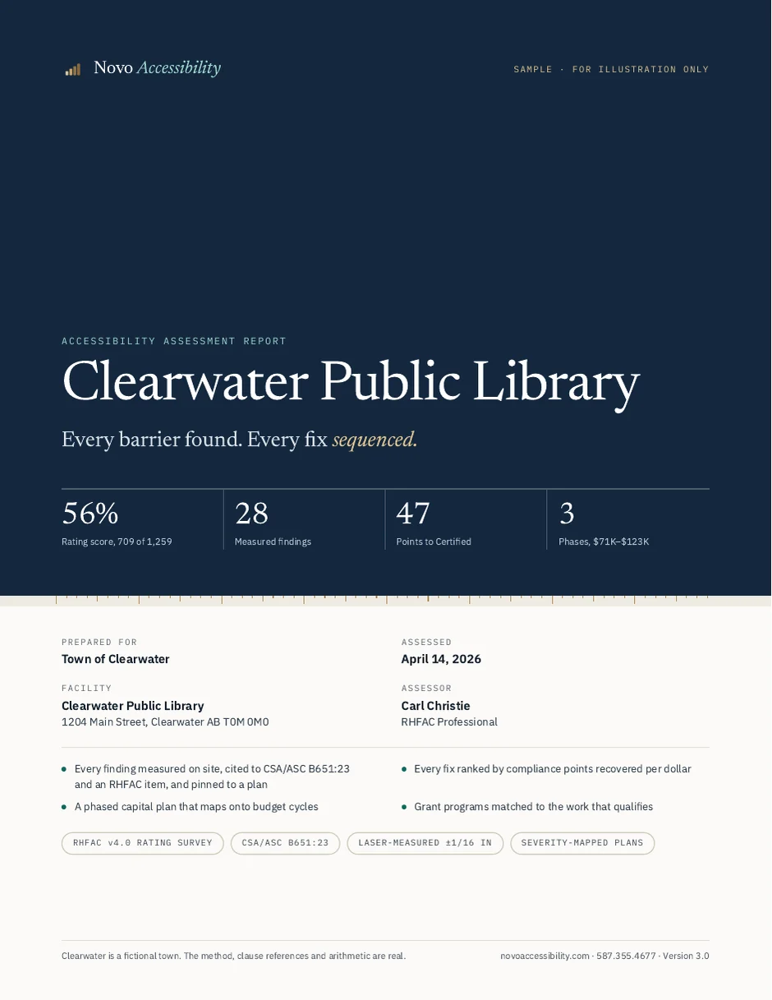

Accessibility capital planning · Canadian municipalities
Every barrier found. Every fix sequenced.
A fixed-fee pilot that turns three to five of your facilities into a measured, costed capital plan council can approve — ranked by what each dollar recovers.
No form, no email. Clearwater is a fictional town; the method and the arithmetic are real.

The pilot, at a glance
- Scope
- 3–5 facilities
- Timeline
- 6–8 weeks
- Fee
- $8,000 + GST
- Change orders
- None
- RHFAC Professional
- Scored to RHFAC v4.0
- Cited to CSA/ASC B651:23
- Laser-measured to 1/16 inch
- CanadaBuys / SAP Ariba registered
- Serving all of Canada
Who it is for
One assessment. Five people who have to act on it.
Each reader gets the part written for them, from the same measured data — so nobody has to translate a findings list into a decision.
Director of Infrastructure
What to fix first, and why, building by building.
CAO
One page for council, readable in under a minute.
Asset manager
A phased roadmap that drops into the capital plan.
Finance and capital planning
Cost ranges by phase and budget cycle, with grants matched.
Procurement
A sole-source justification and purchasing memo, ready to file.
The pilot
One fixed fee. Five deliverables. No change orders.
Three, four or five facilities cost the same. Quoted in writing before work starts.
Three-to-five facility pilot
$8,000
plus GST · one fixed fee
- Timeline
- 6–8 weeks
- Report
- 7–10 business days after the final visit
- Travel
- Included within 100 km
- Buildings
- Civic, up to ~20,000 sq ft
Civic centres, libraries, recreation facilities, transit terminals and public works buildings up to three storeys. Pools, arenas, residential units and larger buildings are quoted separately. Travel beyond 100 km is quoted with the engagement and billed at cost.
The five deliverables
Prioritization matrix
Every barrier, across every facility, ranked by severity, cost and compliance impact.
Capital roadmap
A phased, multi-year sequence that fits your budget cycles and procurement windows.
Executive summary
One page for the council package. What a councillor needs in under 60 seconds.
Council briefing deck
Presentation-ready, with the ranking logic and recommended motion language.
Procurement package
Sole-source justification, purchasing memo and an optional RFP scope of work.
Start here
Municipal facility pilot
Three to five buildings, assessed in full against every applicable RHFAC item, with one combined capital plan.
Then
Multi-facility program
The rest of the portfolio on the same method — consistent scoring, comparable reporting and one consolidated plan.
The sample report
This is the report your council actually sees.
One library in full, from a five-facility pilot. Every number below is computed from its 28 measured findings — none is typed in by hand.
56%
Library score — 709 of 1,259 points
28
Findings, each measured and pinned to a plan
47
Points short of RHF Accessibility Certified
$18–31K
Saved by bundling 8 barriers repeated across the five facilities into one contract
The library’s capital plan — life safety first, then ranked by points per dollar
- Phase 0 · Life safety$11,460 to $19,860, Immediate
- Phase 1 · Year 1$37,160 to $63,570, Reaches Certified
- Phase 2 · Year 2$22,500 to $40,000, Budget cycle 2
Bar length is each phase’s midpoint cost. Full plan $71,120–$123,430 before grants. After the life-safety work, six low-cost actions ($3,760–$6,370) carry the library past the 756-point Certified threshold; the Year 1 ramp rebuild meets the accessible-entrance prerequisite certification also requires.
Section 05 · Severity map
Council sees where the problems are, not just a list.
- Critical · life safety
- High · fails a B651 clause
- Medium · at the limit
- Advisory · best practice
Measured findings
Each of the 28 shows the measured value, the B651 clause, the RHFAC item and points, the cost and its pin.
Zone cost index
Every area, its worst finding and the phase that fixes it — reconciled to the capital plan to the dollar.
Next Dollar ranking
Every fix ranked by points recovered per $1,000, with a running total to the Certified line.
Phase 0 life safety
Visual fire alarms, an area of rescue and grab bars — $11,460–$19,860, corrected first, whatever the score.
Tagged for screen readers, with bookmarks. No form, no email. Plans drawn to measured dimensions are available for tenders and grant applications, quoted before work begins.
Method · Next Dollar ranking
Most reports say what is wrong. Ours says what to fix first.
Life safety is corrected first, whatever it costs. After that, every fix is ranked by the compliance points it recovers per dollar — so the first $25,000 closes the most certification gap, not the most work.
- Measure every applicable RHFAC v4.0 item on site, laser-accurate to 1/16 inch.
- Cite each failure to its CSA/ASC B651:23 clause and pin it to a floor plan.
- Cost each fix as a range from current municipal pricing.
- Rank by points recovered per $1,000, life safety first.
- Phase the work into budget cycles and a multi-year roadmap.
- Summarize it on one page council can act on.
| Action | Est. cost | Points | Per $1K |
|---|---|---|---|
| Move periodical shelving to a 1,200 mm aisle | $0 | +8 | Free |
| Directional sign to accessible washroom | $180–$320 | +5 | 20.0 |
| Adjust entrance door closer to 38 N | $180–$350 | +5 | 18.9 |
| Reprogram elevator audio announcements | $200–$400 | +4 | 13.3 |
| Repaint parking crossing markings | $400–$800 | +3 | 5.0 |
| Lowered service counter section | $2,800–$4,500 | +10 | 2.7 |
| Six actions — past the Certified line | $3,760–$6,370 | +35 | 759 of 756 |
Illustrative, from the sample report. Life-safety work recovers the first 15 of the 47 points needed. A score alone does not certify: RHF also requires an accessible public entrance, so the ramp rebuild is scheduled in Year 1. A survey item shared by two findings is counted once. Findings and costs vary by facility.
Procurement
Built to be bought without a full RFP.
The pilot is sized for simplified purchasing thresholds, so a department head can often approve it directly. Everything your purchasing file needs comes with the quote.
Registered supplier
AN11298778565
CanadaBuys / SAP Ariba network ID. Searchable by procurement officers nationally.
Sole-source ready
Justification template
A sole-source justification and purchasing memo, on request, before you commit.
Fixed price
$8,000 + GST
One fee for three to five facilities, in writing before work starts. No change orders.
Quick wins, identified in every pilot
6 gap-closing actions in the sample
$3.8–6.4K combined
5 of 6 under $1,000 each
Signage, door hardware, line painting and shelving — usually approvable without a capital motion, so council can report progress while the larger plan moves through approval.
Funding
Your report is the paperwork a grant application needs.
Both programs ask for scored, measured evidence of need. The assessment produces exactly that, so the application draws on work you have already paid for once.
Enabling Accessibility Fund
Small projects component. Municipalities are eligible. Construction and renovation that improve accessibility — ramps, universal washrooms, tactile indicators, signage and door hardware — are in scope.
Status, September 2026: no small-projects intake is open; the last ran May to July 2024. We confirm status before you cite a figure to council.
RBC Barrier Buster Grants
Rick Hansen Foundation with RBC and RBC Foundation. Sized for quick wins and mid-cost items — signage, lever hardware, lighting and wayfinding.
Status: closed. 40 recipients were announced during National AccessAbility Week, May 31 to June 6, 2026. We confirm whether a further round is planned.
One assessment, two uses.
- NeedEach barrier measured and cited to CSA/ASC B651:23, with its location on a floor plan.
- Scope and budgetEvery fix carries a cost range, grouped by phase and by room.
- ImpactThe points each fix recovers show how the project moves the building toward certification.
Where we fit
Not the certifier, the architect or the auditor.
Four people can look at the same building. Only one hands you a budget.
| Who | What they give you | What is still missing |
|---|---|---|
| Rick Hansen Foundation | RHFAC certification, adjudicated on the Registry. | An outcome, not a plan. It does not say what to spend first. |
| An architect | Design and drawings, once you know what to build. | You must already have decided what to fix, and in what order. |
| An accessibility auditor | A list of what is wrong. | No costs, no sequence, nothing council can pass a motion on. |
| Novo Accessibility | Every barrier laser-measured, pinned on a floor plan, costed, ranked by points per dollar and phased by budget cycle. | We do not certify. Certification stays with the Rick Hansen Foundation; our report is built to get you there. |
Who does the work
Carl Christie, RHFAC Professional.
Director of Novo Industries Inc. Every finding is measured on site rather than estimated, and every figure in a report is computed from the findings rather than typed. Now accepting municipalities for the first pilot cohort.
- DESIGNATION
- RHFAC Professional — Rick Hansen FoundationCertification of buildings is administered by the Rick Hansen Foundation alone.
- INSTRUMENTS
- Bosch GLM165-27CGL laser measure, ±1/16 inchForce gauge and lux meter where the survey item calls for them.
- SUPPLIER ID
- CanadaBuys / SAP Ariba ANID AN11298778565
- CORPORATION
- Novo Industries Inc. · BN 716914023An Alberta corporation serving all of Canada.
What does a pilot cost?
$8,000 plus GST for three to five facilities, quoted in writing before work starts — three, four or five cost the same. It assumes ordinary civic buildings up to about 20,000 square feet and three storeys, with no pool, arena or residential units; anything larger is quoted separately. Travel is included within 100 km of our office; beyond that, travel time and expenses are quoted with the engagement and billed at cost against receipts.
What areas do you serve?
Municipalities and public-sector organizations across all of Canada.
Can the report support a grant application?
Yes. The scored findings, phased capital plan and cost ranges are the needs documentation programs ask for, including the federal Enabling Accessibility Fund and the RBC Barrier Buster Grants. The Funding section above shows each program’s current status.
Does the sample show everything we would receive?
It shows three of the five deliverables in full — the prioritized findings, the phased capital roadmap and the executive summary — for one library, with the roll-up across all five facilities. A pilot gives every facility that treatment, plus the combined portfolio plan. The council briefing deck and procurement package are produced from the same data and provided with an engagement.
Why is the sample about a town that does not exist?
Because a client’s assessment is theirs. Publishing a real municipality’s barriers, scores and costs would be a breach of confidence. Clearwater is fictional; the method, the clause references and the arithmetic are exactly what a real engagement produces.
How long until we have the report?
A pilot runs six to eight weeks end to end. The written report arrives within seven to ten business days of the final site visit.
How are findings measured and located?
On site, with a Bosch GLM165-27CGL laser measure accurate to 1/16 inch, and a force gauge and lux meter where the item calls for them. Each finding is pinned to a floor plan and shaded by severity, so someone who has never walked the building can see where the problems are. Plans drawn to measured dimensions are available as an extra, quoted before work begins.
Do you certify buildings?
No. RHF Accessibility Certified and Certified Gold status are adjudicated by the Rick Hansen Foundation on the RHFAC Registry. Our report shows how far a building is from each threshold, which prerequisites must be cleared first, and what to fund to get there.
What happens after the pilot?
Most municipalities have more than five facilities, so the usual next step is the rest of the portfolio on the same method. After the first year of work, a reassessment measures progress against the baseline. If you pursue RHF certification, the report shows which prerequisites to clear first.
This website
Accessibility statement
A firm that assesses accessibility should be willing to be assessed. This site is built to WCAG 2.1 Level AA: text and controls meet contrast minimums, everything works by keyboard with a visible focus indicator, the layout holds at phone widths and 200% zoom, headings and landmarks are structured for screen readers, and motion respects your reduced-motion setting. The sample report PDF is tagged, with bookmarks and a set reading language.
If something does not work for you, call 587.355.4677 or email info@novoaccessibility.com and we will fix it — the same standard we hold a client’s building to. Last checked 8 October 2026 with automated contrast, structure and form-label checks at desktop and phone widths, plus a keyboard walk-through.
- WCAG 2.1 AA
- Keyboard navigable
- Screen-reader structured
- Reduced-motion aware
- Tagged PDF
- Report not gated
Start a conversation
Request a 15-minute pilot briefing.
Tell us your facilities, budget cycle and timeline. We will outline what a pilot would look like for your municipality. No commitment.
- Phone
- 587.355.4677
- info@novoaccessibility.com
- Reply
- Within one business day
Request received.
We will be in touch within one business day to schedule your briefing.